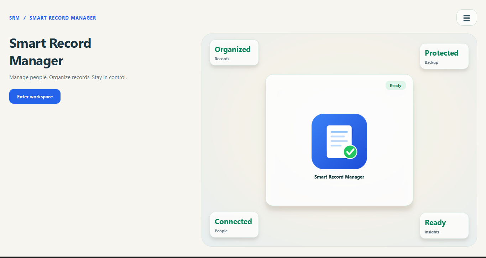
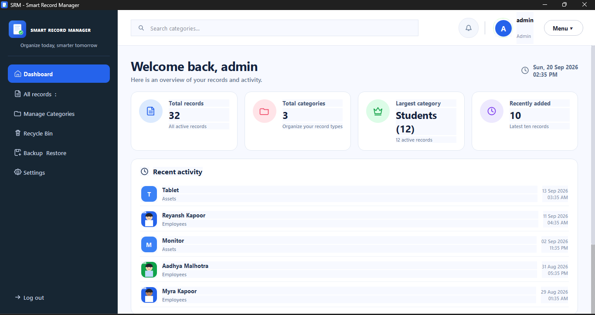
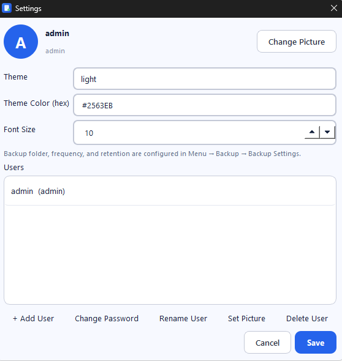

⌕
Find records quickly
Search through your records with a clean interface designed to keep information easy to find.
⌕ Search records...
Smart Record Manager helps you keep people, business, student and other records organized, searchable and easy to manage from one clean desktop workspace.

A focused workspace built around the tasks that matter most when managing structured records.
Search through your records with a clean interface designed to keep information easy to find.
Keep different types of records separated and easier to manage through categories.
Create backups and restore records when you need an extra layer of protection.
Move your information into useful formats when you need to work with it outside SRM.
Keep record-related photos together with the information they belong to.
Manage deleted records through a dedicated recycle-bin workflow.
The SRM interface keeps navigation, record summaries and recent activity visible without overwhelming the workspace.

Explore the real Smart Record Manager interface, including the dashboard and settings workspace.


Smart Record Manager is a desktop record-management application focused on helping users organize and work with structured records through a straightforward interface.
SRM will be available through its Microsoft Store listing. Use the Microsoft Store button on this website once the store link is connected.
It can be used for managing different kinds of structured records, including customer, employee, student and business records.
Yes. Backup and restore are part of the application's record-management workflow.
Yes. The website is prepared with a single store-link placeholder, so the real Microsoft Store URL can be connected without redesigning the site.